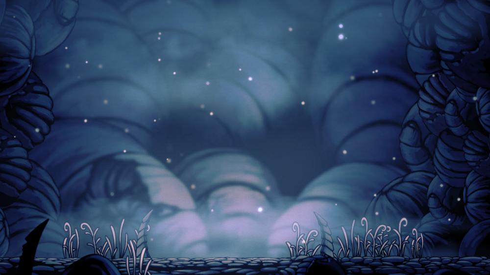

Dirtmouth was once a busy area of the Hallownest, with travelers flocking from all over the place. The once stable bridge that connected King's Pass and the Crystal Peak and the stag station there allowed easy transportation around Hallownest. But as the Infection spread throughout the kingdom, every entrance to the kingdom was shut down, including stag stations. Because of this, the town fell quiet with fewer travelers arriving. Many of the town residents went down to the well for wealth, glory, and enlightenment, with only little ever returning.
Dirtmouth
A quiet town situated at the topmost part of Hallownest.
Located between the Howling Cliffs and Crystal Peak, above the Forgotten Crossroads.
Lore
Inhabitants
- Bretta
- Confessor Jiji
- Cornifer
- Elderbug
- Iselda
- Sly
- Steel Soul Jinn
- Zote the Mighty
Gallery

The start of King's Pass
King's Pass entrance to Dirtmouth
The town centre
The well leading to the Forgotten Crossroads